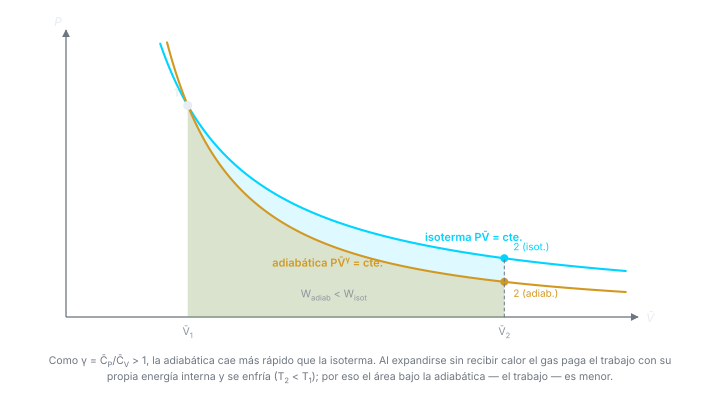

Clase 6: Relación entre Cp y Cv, y Efecto Joule-Thomson
Por qué siempre y cuánto exactamente; y el experimento de estrangulamiento de Joule-Thomson, que mide y explica cómo se licúan los gases industrialmente.
Temas que cubre
- Por qué la capacidad calorífica puede tomar cualquier valor según cómo se absorba el calor
- Derivación general de a partir de la primera ley y la diferencial total de
- Interpretación física de los dos términos que componen la diferencia
- Caso del gas ideal: la ley de Joule reduce todo a
- Caso de líquidos y sólidos:
- Experimento de Joule-Thomson: gas estrangulado a través de un tabique poroso adiabático
- Demostración de que el proceso es isoentálpico:
- Definición del coeficiente
- Regla cíclica para conectar con y
- Efecto Joule-Thomson y su rol en la licuefacción de gases
- Cambios adiabáticos de estado: de a cte.
- Las relaciones de Poisson , , y el trabajo adiabático
Conceptos clave
Sólo y importan
La capacidad calorífica de un sistema puede valer cualquier cosa: depende de cómo se le entregue el calor. Sólo dos caminos están bien definidos y son reproducibles — a volumen constante y a presión constante — y son los únicos que se tabulan.
Los dos términos de
El primero, , es el trabajo de expansión por grado. El segundo, , es la energía necesaria para separar las moléculas al aumentar . A constante no hay ni uno ni otro: todo el calor sube .
Gas ideal:
La ley de Joule anula el segundo término, y de sale . Queda una relación exacta, universal e independiente de la sustancia. En gases reales es una buena aproximación.
Líquidos y sólidos
Se dilatan muy poco: anula ambos términos y . Por eso en fases condensadas se habla de "el" calor específico, sin especificar la restricción.
Proceso isoentálpico
En el estrangulamiento: el entorno hace trabajo empujando el gas por un lado y el gas hace por el otro, con . Sustituyendo en la primera ley se obtiene , es decir constante. No es reversible, pero sí isoentálpico.
Coeficiente
Cuánto cambia por unidad de caída de a entalpía constante. Si , el gas se enfría al expandirse — ese es el principio de los ciclos de licuefacción industriales. Un gas ideal tiene : el efecto es puramente de gas real.
Por qué aparece
En un adiabático el gas no puede pedir calor prestado: el trabajo sale de su propia . Al imponer eso sobre aparece el cociente , que vale para un gas monoatómico y para uno diatómico.
Adiabática vs. isoterma
Como , la adiabática es siempre más empinada. Dos consecuencias: una expansión adiabática enfría el gas, y produce menos trabajo que la isoterma entre los mismos volúmenes.
Fórmulas fundamentales




Qué hay que entender
- El adiabático reversible no es "otra fórmula": es la primera ley con más la ley de Joule. Si se olvidan las relaciones de Poisson se pueden rederivar en tres líneas.
- siempre, y por una razón física clara: a presión constante hay que pagar además el trabajo de expansión y la separación de las moléculas.
- es por mol. Para moles, . Se demuestra en dos líneas usando la ley de Joule — es un clásico de control.
- El estrangulamiento es irreversible pero isoentálpico. "Isoentálpico" no significa reversible: significa que inicial y final coinciden.
- El efecto Joule-Thomson no existe en un gas ideal: depende sólo de , así que constante implica constante y . Todo el efecto viene de las constantes y .
- La regla cíclica es la herramienta general: sirve para reexpresar cualquier derivada incómoda en términos de tres medibles. Vale la pena tenerla a mano.
- El signo de decide si el gas se enfría o se calienta al estrangularse; con Van der Waals resulta , y su cambio de signo define la temperatura de inversión.